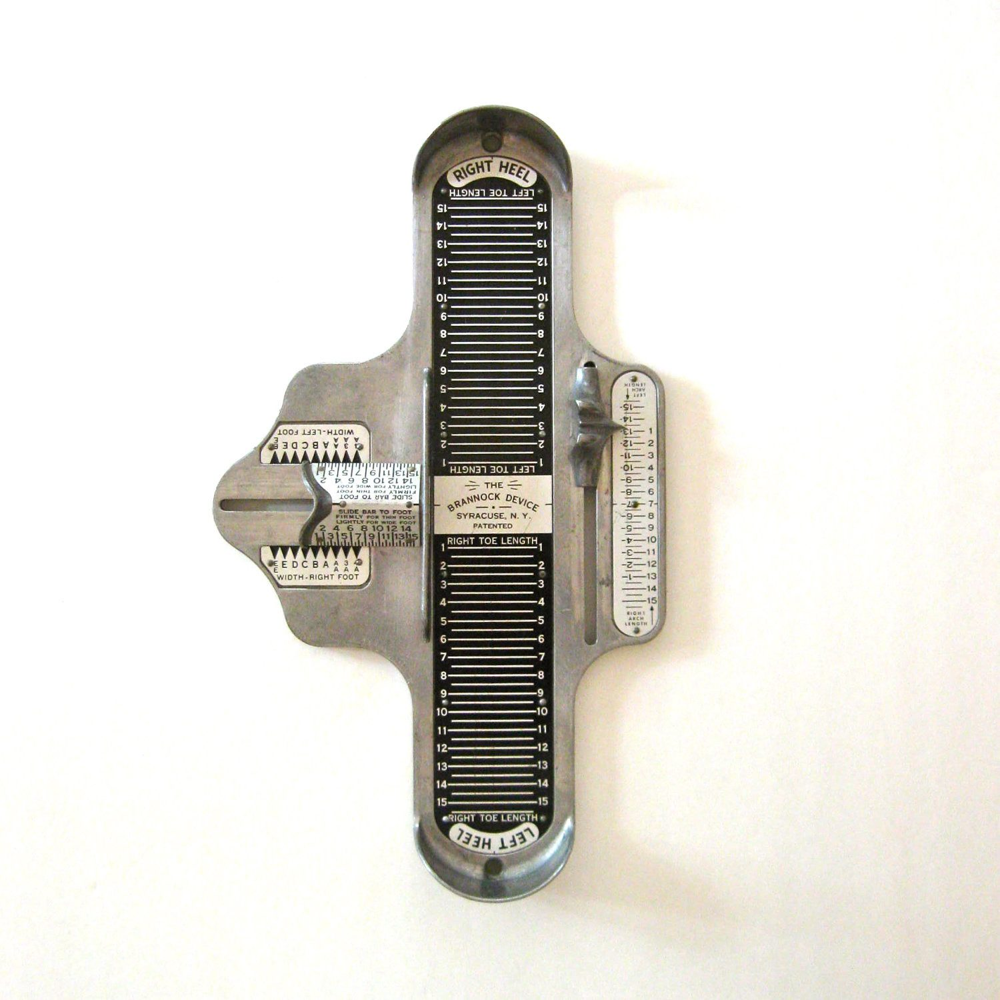
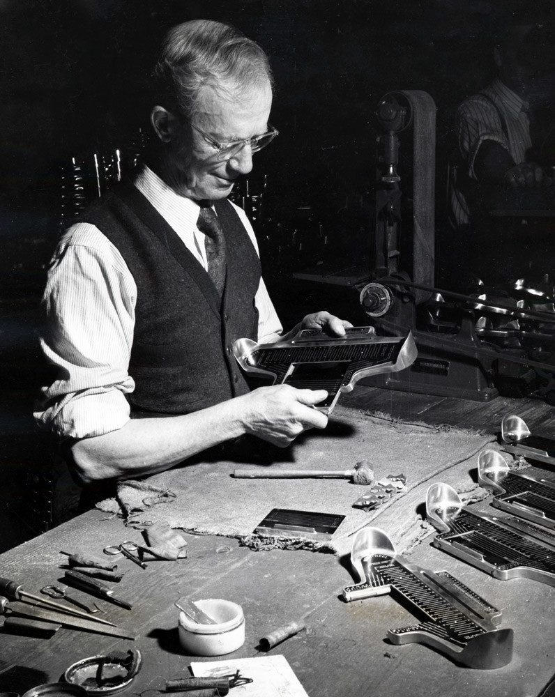
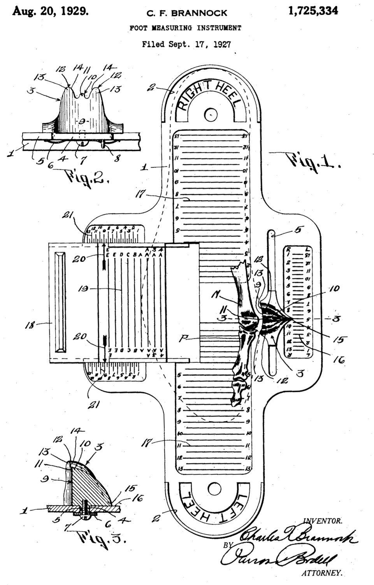
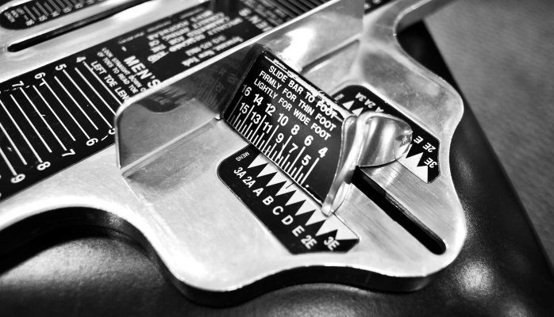

One of the unsung heroes of Industrial Design, the Brannock Device is ubiquitous, and has been for the better part of a century. The next time you visit a shoe store, take a look around. Chances are, you will find a Brannock device, or see its influence.

The Brannock device is THE standard tool for measuring not just the length of the foot, but also the width and arch length. It has heel cups on either side, and the whole device is rotated to measure the other foot. Before the Brannock, the industry standard was the RITZ stick, which was closer to a wooden ruler than the device we all know and use today.
The device was invented by, and owes its name to Charles F. Brannock. Born in Syracuse, New York on May 16th, 1903, He was the son of a shoe industry entrepreneur. After graduating from Syracuse University, he began working in the Park-Brannock Shoe Store. He spent two years developing a simple means of measuring the dimensions of the foot, and patented the first prototype in 1925. The instrument was a sales aid, but by ensuring a more accurate fit, the device also helped his customers reduce or avoid pain, and other problems caused by ill-fitting shoes. He later formed the Brannock Device Company to manufacture, market and sell the devices, and headed it until he passed away in 1992. They also made specially calibrated devices for various branches of the American military, which issued millions of boots and shoes to servicemen, especially during World War II.

The device itself has a strong, but timeless industrial aesthetic. It is the very definition of "form follows function". The simple black paint over polished metal ensures that it ages well, and the easy to read text and simple design make it comfortable and easy to use, for both the salesman and the customer. Versions of the device are made for women, children, ski-boots and other athletic footwear. There were competing devices on the market, but the better design meant it quickly became the industry standard.

The Park-Brannock shoe store closed in 1981, but the Brannock Device Company continues to make and sell the devices, under Salvatore Leonardi. Over a million Brannock Devices have been sold since the patent was first issued. To credit his design, in 2007, Brannock was inducted into the National Inventors Hall of Fame.
It's not a product that doesn't often come up when talking about industrial design. In some way, that's a sign of a great product: it fulfills its function, and disappears into the background when not required.
(For more information and images, visit The Smithsonian's page on Brannock)
